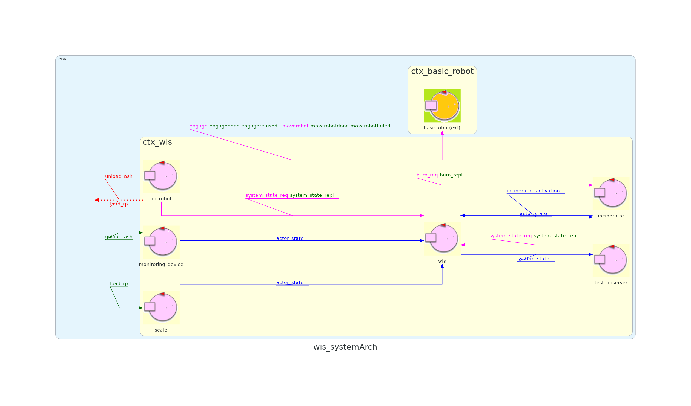

| Sprint name | Sprint 1 |
|---|---|
| Previous sprint | Sprint 0 |
| Next sprint | |
| QAK model | sprint1.qak |
| Developed by | Alessio Benenati Giulia Fattori |
In the previous sprint we focused on requirements analysis and we produced a simple base archictecture of what could be inferred by the assignement text. in this sprint we will focus on the relationship between WIS and OpRobot, our goals are
Based on the requirements, the user interacts with the WIS not to change the system's state but to monitor it. From this, it can be deduced that the WIS must be able to retrieve information on the state of each system component. For this purpose, it makes sense to make the WIS an observer of each component.
Regarding the OpRobot the requirements do not provide enough information to determine with certainty how to model it. In particular, it is stated that the behavior actuator of the OpRobot is the DDRRobot, which is provided by the client as a service (BasicRobot). However, it is not specified whether this should be controlled by an autonomous actor or whether the WIS itself could control the BasicRobot.
At first glance, one might think that having the WIS control the DDRRobot could be a good idea because the execution cycle of the OpRobot requires observing the system's state to verify the initial conditions, and this information is already present in the WIS as it acts as an observer.
However, a more in-depth analysis reveals that the OpRobot actually needs to verify the initial conditions only at two specific moments (at the beginning and at the end of an execution cycle) and would not gain significant advantages from continuously observing the state of the entire system (which would significantly increase the complexity of the WIS actor, which would have to both control the DDRRobot and update its internal representation of the system's state).
For these reasons, it is more convenient to apply the Single Responsibility Principle by incorporating the logic for controlling the DDRRobot into a dedicated actor, the BasicRobot, which communicates with the WIS to ensure that the initial conditions are verified.
In a real system, the opRobot should be able to load and unload the RPs and their ashes, and such changes to the system would be detected by the respective sensors (Scale and MonitoringDevice) without the need to exchange messages at the software level.
However, since the current prototype operates in a purely virtual environment, it is necessary to simulate these two actions by sending appropriate messages.
For this reason, we have decided to introduce two specific events, LoadRP and UnloadAsh, which modify the state of the Scale and MonitoringDevice, respectively.
based on the Problem Analysis carried on we implemented an executable version of the system covering the discussed features, we attach here a visual representation of the system architecture:
Test Class: WISTest
| Test Name | Initial Condition | Expected Behavior |
|---|---|---|
| testIncinineratorActivation | WasteStorage contains 4 RP, AshStorge is empty, nobody empties AshStorage, Incinerator is inactive | Once the system is inictialized, Incinerator is active |
| TestOk4Rp | WasteStorage contains 4 RP, AshStorge is empty and can contain the ashes of 3 RPs, nobody empties AshStorage | After some time WasteStorage contains 1 RP and AshStorage is full |
To test the system you will have to activate the Virtual Environment first.
To do so, open a terminal in the unibo.basicrobot24 folder and type
docker compose -f virtualRobot23.yaml up
n.b. if you have an older version of docker, you may have to type docker-compose instead of docker compose
After that you will have to activate the BasicRobot, that will act as a mediator between the VirtualRobot and the WasteIncineratorService application.
To do so open another terminal inside the unibo.basicrobot24 folder and type
gradlew run
Lastly you have to activate the WIS system, by opening a third terminal inside the WIS_Sprint1 folder and running
gradlew run
n.b. Type gradlew test If you want to launch JUnit tests instead of activating the system demo
In the next sprint, we will focus on the MonitoringDevice's behavior.
Our goal is to connect the OpRobot to a virtual environment (the 'VirtualRobot' provided by the customer) so that it will be simple to switch to a physical OpRobot at any time by only changing a configuration parameter.